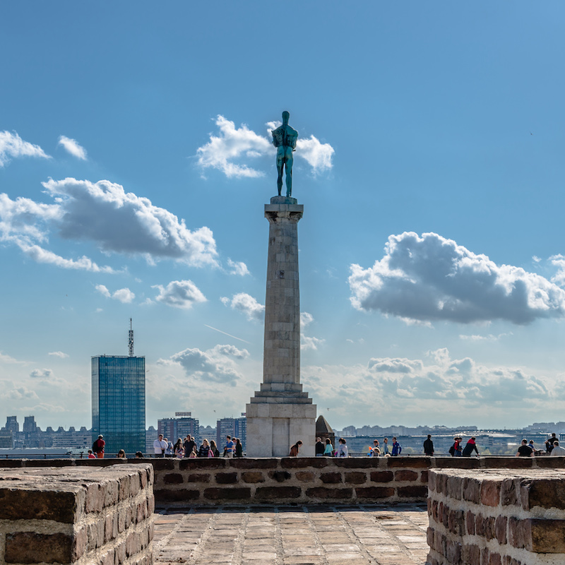
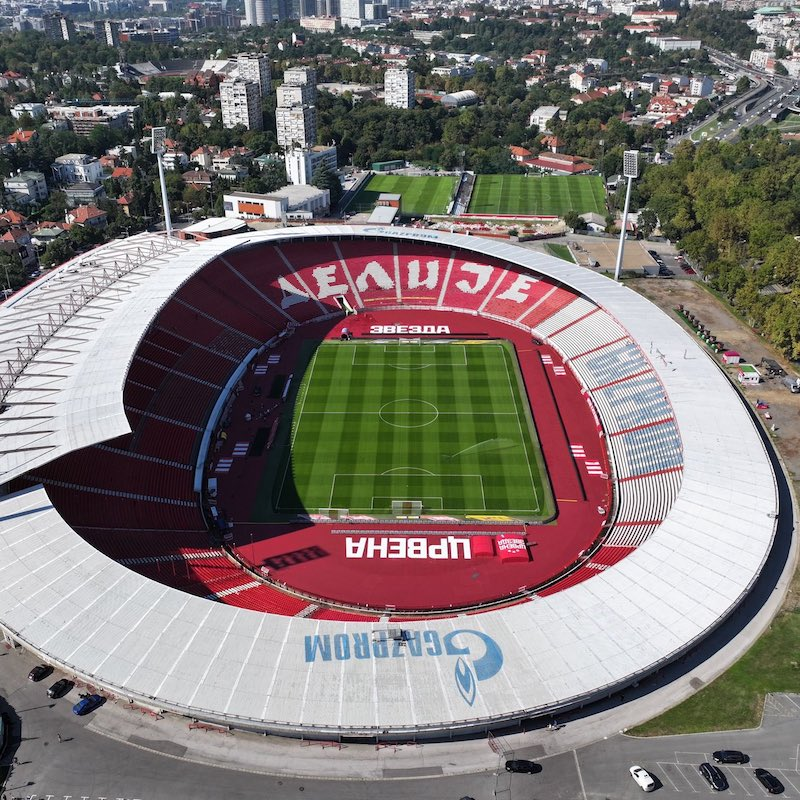
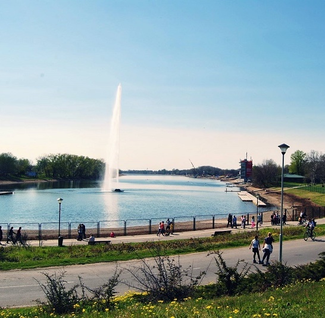
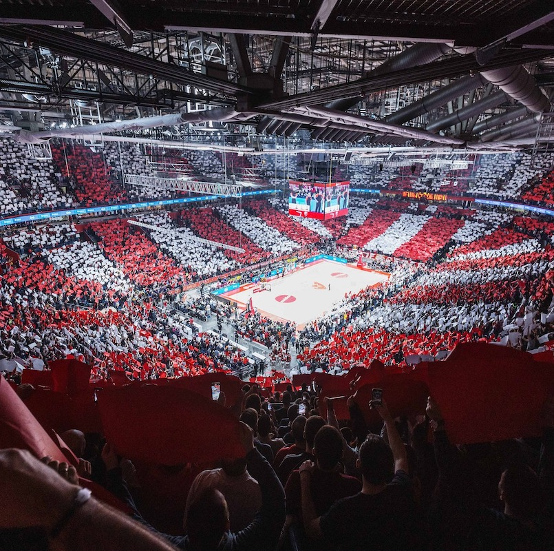
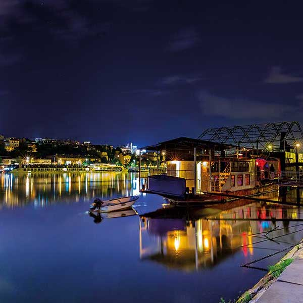

History of the CITY
Where history, finesse, passion, class and soul meet.
Belgrade (Serbian: Београд, Beograd) is the capital and largest city of Serbia. It is located at the
confluence of the Sava and Danube rivers and at the crossroads of the Pannonian Plain and the Balkan
Peninsula. The population of the Belgrade metropolitan area is 1,685,563 according to the 2022 census.
It is one of the major cities of Southeast Europe and the third most populous city on the Danube river.
Belgrade is known locally as Beograd, which means “white city” or “white fortress.” Beo means “white”
and grad means “city.” The city is named for its fortress, which was built on a white ridge that has
been of great strategic importance throughout history.
Belgrade is one of the oldest continuously inhabited cities in Europe and the world. One of the most
important prehistoric cultures of Europe, the Vinča culture, evolved within the Belgrade area in the
6th millennium BC. In antiquity,
The Winner

Statue in Belgrade Fortress, Kalemegdan
The symbol of victory
Dedicated 7 October 1928
Church of Saint Sava

One of the largest orthodox curhes in the world
Dedicated to Saint Sava
The first stone was laid in 1935
Marakana

Home stadion of FC Red Star
Capasity: 53,000
Record attendance: 116,000 (23 April 1975)
Entertainment
Where history, finesse, passion, class and soul meet.
Belgrade (Serbian: Београд, Beograd) is the capital and largest city of Serbia. It is located at the
confluence of the Sava and Danube rivers and at the crossroads of the Pannonian Plain and the Balkan
Peninsula. The population of the Belgrade metropolitan area is 1,685,563 according to the 2022 census.
It is one of the major cities of Southeast Europe and the third most populous city on the Danube river.
Belgrade is one of the oldest continuously inhabited cities in Europe and the world. One of the most
important prehistoric cultures of Europe, the Vinča culture, evolved within the Belgrade area in the
6th millennium BC. In antiquity,
Ada Ciganlija

River island, perfect for a beach day in the middle of the town
During summer seasons, can have over 100,000 visitors daily and up
to 300,000 visitors over the weekend
Ada Ciganlija has been commonly nicknamed "More Beograda" ('Belgrade's Sea')
Match day

Best fans in the world
Perfect place for any sport lover
Red Star - Partizan eternal derby is world famous
Nightlife

Belgrade is one of the top party destinations in Europe
Even on midweek nights, the city centre was full of people in cafés, bars and restaurants.
Splavovi, barges and houseboats adapted into the kafanas, restaurants, clubs and cafés, central
venues of the modern city nightlife